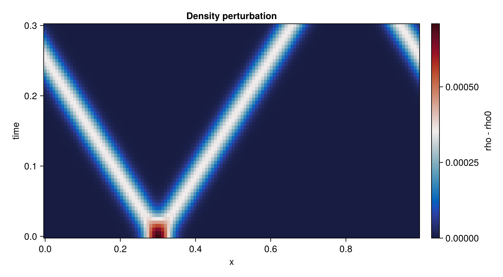

Your first CompactLES simulation
This tutorial follows a small pressure disturbance around a periodic one-dimensional domain. It takes a physical problem specification, discretizes it, evolves the resulting system of ordinary differential equations, and shows the result in an $x$–$t$ diagram. Only $x$ is resolved; the other two dimensions contain one point and therefore carry no spatial derivatives.
using MPI
MPI.Initialized() || MPI.Init(threadlevel=:funneled)
using CompactLES
using CairoMakie
CairoMakie.activate!(type = "png")Specify the physical problem
We use nondimensional variables and a calorically perfect gas, meaning that its heat-capacity ratio $gamma$ is constant. The background state is $p_0 = rho_0 = 1$. A Gaussian pressure perturbation of amplitude $10^{-3}$ is small enough for its propagation speed to be close to the acoustic speed $c_0 = sqrt(gamma p_0/rho_0)$. Choosing $rho=rho_0(p/p_0)^{1/gamma}$ makes the initial disturbance isentropic.
gamma = 1.4
amplitude = 1.0e-3
center = 0.30
width = 0.035
pressure(x) = 1 + amplitude * exp(-((x - center) / width)^2)
problem = Problem(
name = "periodic acoustic pulse",
eos = single_species(gamma = gamma),
domain = ((0.0, 1.0), (0.0, 1.0), (0.0, 1.0)),
bcs = ntuple(_ -> (PeriodicBC(), PeriodicBC()), 3),
ic = (x, y, z) -> begin
p = pressure(x)
Prim(p = p, rho = p^(1 / gamma))
end,
)Problem "periodic acoustic pulse"
domain: (0.0, 1.0) × (0.0, 1.0) × (0.0, 1.0)
metric: CartesianMetric
EOS: IdealMixture (1 species)
boundary conditions: PeriodicBC / PeriodicBC, PeriodicBC / PeriodicBC, PeriodicBC / PeriodicBC
sources: noneNumerics contains the grid and algorithms rather than the physical problem. n_global = (128, 1, 1) resolves only $x$. lele_d1_6() selects a sixth-order compact first derivative: derivative values along a grid line are coupled by a banded spatial solve. This does not make time advancement implicit.
The CFL number scales the explicit timestep selected from the fastest local acoustic and diffusive rates. Filtering is disabled because this disturbance is smooth and well resolved.
numerics = Numerics(
n_global = (128, 1, 1),
deriv = lele_d1_6(),
art = ArtParams(enabled = false),
cfl = 0.6,
filter_interval = 0,
)
solver, Q = setup(problem, numerics)(Solver(grid=128 × 1 × 1, t=0.0, step=0, cfl=0.6, metric=CartesianMetric), ConservedState{Float64}(136 × 1 × 1 × 5))setup samples the primitive initial condition (p, rho, and velocity) and converts it to the conserved variables advanced by the solver: mass, three momentum components, and total energy. Spatial flux derivatives turn their governing equations into a finite system
\[\frac{dQ_h}{dt}=R_h(Q_h,t),\]
which run! advances with a five-stage, fourth-order low-storage Runge–Kutta method. See Spatial and temporal discretization for the complete stage and timestep sequence.
Read the state
line_profile extracts a named report variable along one axis as a (coordinate, value) pair. It resolves :rho through the same path as the visualization writers, including collective communication under MPI and curvilinear geometry when applicable. Here it returns mixture density along $x$.
x, rho0 = line_profile(solver, Q, :rho)
tfinal = 0.30
times = collect(range(0.0, tfinal; length = 61))
snapshots = [rho0]1-element Vector{Vector{Float64}}:
[1.0, 1.0, 1.0, 1.0, 1.0, 1.0, 1.0, 1.0, 1.0, 1.0 … 1.0, 1.0, 1.0, 1.0, 1.0, 1.0, 1.0, 1.0, 1.0, 1.0]AtTime asks run! to end full Runge–Kutta steps exactly at the requested times. run! otherwise recomputes a CFL timestep before every step. The columns of rho_xt therefore lie on a uniform physical-time axis even though the timestep varies slightly.
record = Callback(AtTime(times[2:end]), function (solver, Q)
push!(snapshots, line_profile(solver, Q, :rho)[2])
nothing
end)
run!(solver, Q; tfinal, nmax = 10_000, callback = record)
rho_xt = reduce(hcat, snapshots)128×61 Matrix{Float64}:
1.0 1.0 1.0 1.0 1.0 1.0 1.0 … 1.00011 1.00008 1.00005 1.00003
1.0 1.0 1.0 1.0 1.0 1.0 1.0 1.00007 1.00004 1.00003 1.00001
1.0 1.0 1.0 1.0 1.0 1.0 1.0 1.00004 1.00002 1.00001 1.00001
1.0 1.0 1.0 1.0 1.0 1.0 1.0 1.00002 1.00001 1.0 1.0
1.0 1.0 1.0 1.0 1.0 1.0 1.0 1.00001 1.0 1.0 1.0
1.0 1.0 1.0 1.0 1.0 1.0 1.0 … 1.0 1.0 1.0 1.0
1.0 1.0 1.0 1.0 1.0 1.0 1.0 1.0 1.0 1.0 1.0
1.0 1.0 1.0 1.0 1.0 1.0 1.0 1.0 1.0 1.0 1.0
1.0 1.0 1.0 1.0 1.0 1.0 1.0 1.0 1.0 1.0 1.0
1.0 1.0 1.0 1.0 1.0 1.0 1.0 1.0 1.0 1.0 1.0
⋮ ⋮ ⋱ ⋮
1.0 1.0 1.0 1.0 1.0 1.0 1.0 1.00015 1.0002 1.00025 1.0003
1.0 1.0 1.0 1.0 1.0 1.0 1.0 … 1.00021 1.00026 1.00031 1.00034
1.0 1.0 1.0 1.0 1.0 1.0 1.0 1.00028 1.00032 1.00035 1.00036
1.0 1.0 1.0 1.0 1.0 1.0 1.0 1.00033 1.00035 1.00036 1.00034
1.0 1.0 1.0 1.0 1.0 1.0 1.0 1.00036 1.00035 1.00033 1.00029
1.0 1.0 1.0 1.0 1.0 1.0 1.0 1.00035 1.00032 1.00027 1.00022
1.0 1.0 1.0 1.0 1.0 1.0 1.0 … 1.00031 1.00026 1.00021 1.00016
1.0 1.0 1.0 1.0 1.0 1.0 1.0 1.00024 1.00019 1.00014 1.0001
1.0 1.0 1.0 1.0 1.0 1.0 1.0 1.00018 1.00013 1.00009 1.00006Interpret the result
With zero initial velocity, the perturbation separates into equal left- and right-travelling waves. Periodicity makes a wave leaving one side re-enter from the other. The plotted quantity is the density perturbation rather than density itself so the small acoustic signal remains visible.
fig = Figure(size = (760, 420))
ax = Axis(fig[1, 1], xlabel = "x", ylabel = "time",
title = "Density perturbation")
hm = heatmap!(ax, x, times, rho_xt .- 1; colormap = :balance)
Colorbar(fig[1, 2], hm, label = "rho - rho0")
fig
This page was generated using Literate.jl.